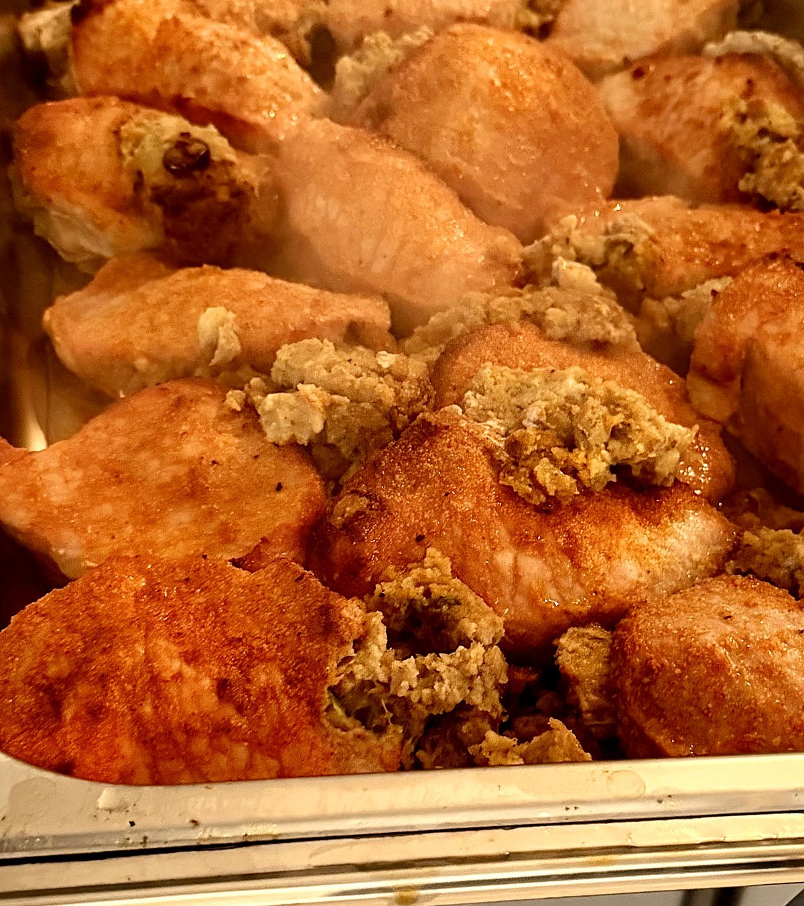

Case Study · Wedding Catering · Western New York
100 Guests. Two Chefs. One Standard.
How a lean team built around handmade food delivered a wedding buffet that guests said they would expect at a restaurant, not a reception.
100
Guests served
2
Person kitchen team
By hand
Special plates delivered
5★
Client rating
Situation
A couple who wanted the food to be worth remembering.
The couple had seen what standard wedding catering looked like. Chafing dishes. Banquet-hall proteins. Food that was technically adequate and forgettable. They wanted none of it.
They came to Charlie Accivatti with a clear brief: 100 guests, buffet service, and food good enough that no one at the reception would associate the word "buffet" with the word "fine." The food had to be real. Handmade where it counted. The kind of meal guests would bring up months later when talking about the wedding.
The couple had done their research. They knew Charlie's background: the restaurant openings, the large-format event work, the commitment to handmade food at every scale. What they were hiring was not a caterer in the conventional sense. They were hiring a hospitality professional who happened to cook.
Challenge
The arithmetic of a 100-person buffet with a two-person team.
The math of a full-room wedding buffet is unforgiving. Every dish has to hold. Quality has to be consistent from the first plate to the last. The guest who fills their plate at 6:30 and the guest who arrives at the buffet at 7:10 need to eat the same meal.
The harder variable: two people. Charlie as lead chef. Max as the sole kitchen assistant. Two people responsible for the full arc of the event, from morning prep through final service. No support crew. No catering company infrastructure behind them.
This was not a budget compromise. It was a deliberate operational choice. A small, focused team that knows the food and knows the plan will outperform a larger crew assembled the week of the event. Communication is frictionless. Decisions happen in real time. The kitchen stays calm because the people in it trust each other.
But a two-person team running a 100-guest event operates without margin. Everything that could go wrong had to be anticipated and eliminated in prep. There is no one to call. There is no fallback. The work either holds or it does not.

Execution
Prep was the plan. Service was the result.
Work on the menu began weeks before the event. Dishes were selected not just for flavor but for how they would hold through a multi-hour service window. Anything that could not maintain quality from the first plate to the last was cut or restructured. The menu had to be honest about what the format could support.
Sourcing was handled locally where possible. The centerpiece protein, thick-cut pork chops stuffed with herb filling and seasoned the morning of service, required specific butcher coordination to arrive at spec. The butcher relationship mattered as much as the recipe.
Day of, Max worked the mise en place from the first hour. Garlic broken down. Builds staged. Early prep running in sequence so nothing was sitting longer than it needed to. Charlie managed the proteins, the sauce development, and the service timeline. The kitchen ran quiet. That is not an accident. A quiet kitchen is a kitchen where the plan is working.
Service was structured to close the quality gap between first and last plate. Dishes were held at temperature with care for texture, not just heat. The buffet was replenished from fresh reserves rather than left to consolidate on the line. Guests were not eating food that had been sitting. They were eating food that had just finished cooking, as close to that as a buffet format allows.
The floor ran with the same discipline as the kitchen. Guests should not feel the effort of the operation behind their meal. They should feel the result of it. That is what full-room hospitality means in practice: the work stays invisible so the experience stays present.
The centerpiece
Cut thick. Stuffed by hand. Seasoned the morning of.
The stuffed pork chops were the anchor of the buffet. Locally sourced, cut to a specific thickness, filled with an herb stuffing built from scratch, and seasoned the day of service. Not the morning before. Not the day before.
The reasoning is simple: proteins treated as individual meals, not as catering product, taste like individual meals. The pork chops that went to the hundredth guest were prepared with the same care as the pork chops that went to the first. That is not a technique. That is a decision about what the work means.
Every dish on the buffet held to the same standard. Plated for a full room. Treated like it was going to one table.


Results
Every guest served. Every dish held.
100 guests were served. The buffet maintained quality from the first plate to the last. No buffet dish was pulled or backed up with a replacement. Guests with dietary needs, and a few picky kids, got their own plates, made separately and hand-delivered to their seats. The pork chops came through service consistently. The handmade elements held their texture and integrity across the full service window.
The kitchen stayed invisible. The floor ran calm. The couple spent their reception at their wedding, not managing a catering situation they had not anticipated.
The standard the couple had set going into the event was high. By their own account, it was exceeded. Not met. Exceeded.
★★★★★
“You exceeded ALL of our expectations. Your food was incredible. I would expect that quality at a nice restaurant ordering individual meals, not at a buffet dinner.”
Kayleen H., Bride
What Made This Work
The decisions that delivered the result.
-
Prep discipline is the whole game
At 100 guests with two people in the kitchen, nothing can go wrong during service that was not already addressed in prep. Every decision made under pressure during service is a decision taken away from something else. The prep timeline for this event was treated with the same rigor as the menu itself. When service started, the plan was already done. Service was just executing it.
-
Handmade food requires honest scheduling
When pasta is rolled by hand and proteins are stuffed and seasoned to order, the prep window is fundamentally different from batch-cooking premade product. The schedule has to account for this honestly, not optimistically. Crystalline Management builds menus around what will hold well and what needs to be timed precisely. This event had both. The schedule respected both.
-
Small teams win on execution
Two people who know the event, the menu, and each other will outperform a larger team assembled the day of the event. Communication is frictionless. Adjustments happen in real time without a chain of command. The kitchen stays quiet. The floor never feels the tension of a team that is coordinating mid-service. This event ran on trust between two people who had done this kind of work before and prepared for it specifically.
-
The buffet format is an opportunity, not a concession
The assumption in wedding catering is that a buffet is a step down from plated service. This event challenged that assumption directly. A buffet built around handmade food, managed with discipline, and replenished from fresh reserves can produce a dining experience that surprises guests who expected something mediocre. The testimonial from this couple is the clearest evidence of that. The goal was never to make a good buffet. It was to make good food that happened to be served from a buffet.
Planning a wedding in Western New York
This is what your wedding catering can look like.
Every event is planned from scratch, priced based on your guest count and service style, and executed by Charlie directly. No handoffs. No surprises.